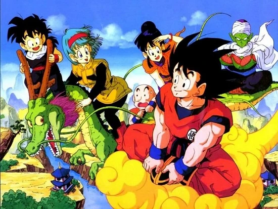
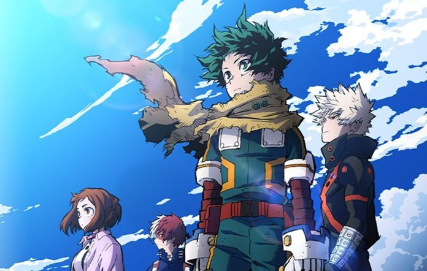
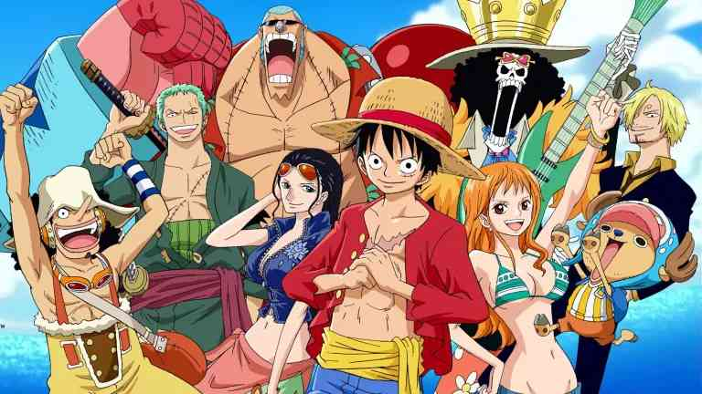
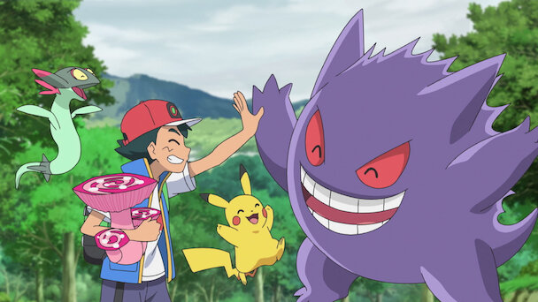

The story of adult Goku. The power level he reaches here is outstanding.

Young Kamado Tanjiro goes out one day to collect wood to return
to his family slaughter by demonds, he then becomes a demon slayer.
Modern day heros fighting for what is right.
Luffy is just too funny and he is also the strongest.
In a world where animal like creates with power leave alongside humans.
